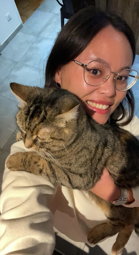
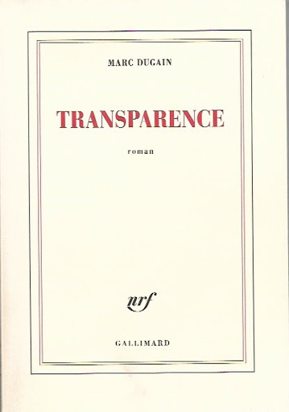

Ambre Beunaiche
Je suis étudiante à l’Essec et je viens du Mans. J’adore les animaux ainsi que les voyages 🌍.
Ma startupJ’ai été adoptée et je suis née sur un autre continent : l'Asie ! En Chine.
Plus précisément à Wuhan cette ville qui a aussi vu naitre le Covid.
J'aime beaucoup voyager, particulièrement au ski pendant les périodes d'hiver. Mais pas que !
J'ai pu visiter la Chine, l'Allemagne au sein d’une famille d’accueil à 3 reprises et l'Italie, j'ai spécialement aimé Rome.
J’aime les animaux et particulièrement mon chat même si j’ai toujours voulu avoir un chien 🐶.
J’aime lire, mon livre préféré est un livre de Marc Dugain : Transparence 📖
 